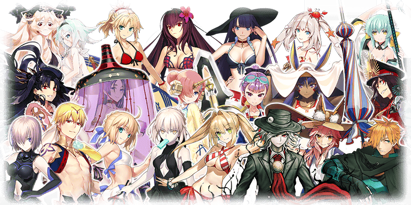

◆活動開始時間◆ 預定近日舉辦！
◆活動概要◆
舉辦期間限定活動「從者夏日慶！」！
這裡無論誰都是初次參加。協助Servant們以「從者★慶」的頂點為目標吧！
本活動中進行主線關卡的話，活動限定Servant「★4(SR)貞德〔Alter〕(Berserker)」將期間限定加入。
通過所有的主線關卡，讓「★4(SR)貞德〔Alter〕(Berserker)」正式加入吧！
◆活動參加條件◆
只限通過「特異點F 炎上汙染都市 冬木」的Master才能參加
期間限定活動「從者夏日慶！」的活動關卡中，會對特定Servant賦予對活動攻略有利的效果！
強化對象Servant，挑戰活動吧！
※自8月7日(二) 17:00，在Servant選擇畫面和Servant強化畫面等中，追加「下次活動對象」篩選器。
由於是只顯示於下個舉辦活動活躍Servant的便利功能，敬請活用。
◆對象Servant◆
| 職階 | 稀有度 | Servant名 |
|---|---|---|
| Saber | ★★★★ | 弗蘭肯斯坦 |
| Archer | ★★★★★ | 阿爾托莉亞・潘德拉剛 |
| ★★★★ | 安妮・伯妮＆瑪莉・瑞德 | |
| ★★★★ | 海倫娜・布拉瓦茨基 | |
| ★★★ | 羅賓漢 | |
| Lancer | ★★★★★ | 玉藻前 |
| ★★★★ | 清姬 | |
| ★★★★ | 源賴光 | |
| Rider | ★★★★★ | 阿爾托莉亞・潘德拉剛〔Alter〕 |
| ★★★★ | 伊絲塔 | |
| ★★★★ | 莫德雷德 | |
| Caster | ★★★★★ | 尼祿・克勞狄烏斯 |
| ★★★★ | 吉爾伽美什 | |
| ★★★★ | 瑪莉・安東尼 | |
| Assassin | ★★★★ | 斯卡哈 |
| ★★★★ | 尼托克里絲 | |
| Berserker | ★★★★ | 織田信長 |
| Ruler | ★★★★ | 瑪爾大 |
| Avenger | ★★★★★ | 巖窟王 愛德蒙・唐泰斯 |
| Shielder | ★★★ | 瑪琇・基利艾拉特 |
